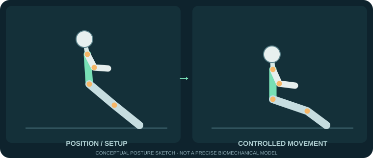

Exercise encyclopedia / Legs
Reverse lunge
Step backward and lower through a comfortable range, then return without losing balance.
Movement illustration

How to perform it
- Stand tall near a stable support if balance is uncertain.
- Step one foot back to a comfortable staggered stance.
- Bend both knees and lower vertically as far as you can control.
- Push through the front foot to return and switch sides.
Breathe continuously and use a range that feels controlled and comfortable for your body.
Why this movement matters
Lower-body patterns share work across hip, knee and ankle musculature. Joint angles, depth, support and individual body proportions change the emphasis.
Progression checkpoint
Build reliable balance on both sides before adding range.
Equipment and safety
Use a support and comfortable depth when balance, knee or ankle tolerance is a limiting factor.
Problem solving
Common mistakes & corrections
Correction: Place feet a little wider side-to-side and use a support.
Correction: Move slowly and find a foot and hip alignment you can control.
Training progression
Find your next variation
This is one possible route from a lower-demand version to a more demanding version. You can switch back whenever needed; these steps are not fixed tests or guarantees.
- Bodyweight squat
- Reverse lunge
- Step-up
Readiness guidance: Build reliable balance on both sides before adding range.
Build a practice
Where this fits in a program
Reverse lunge is a legs exercise. Pair it with movements from other patterns over the training week, and choose sets or hold times you can recover from. See the Foundation program for adaptable examples; there is no universally correct repetition target.
Calisthenics Atlas editorial guide · November 2026 · Original conceptual artwork · General audience education